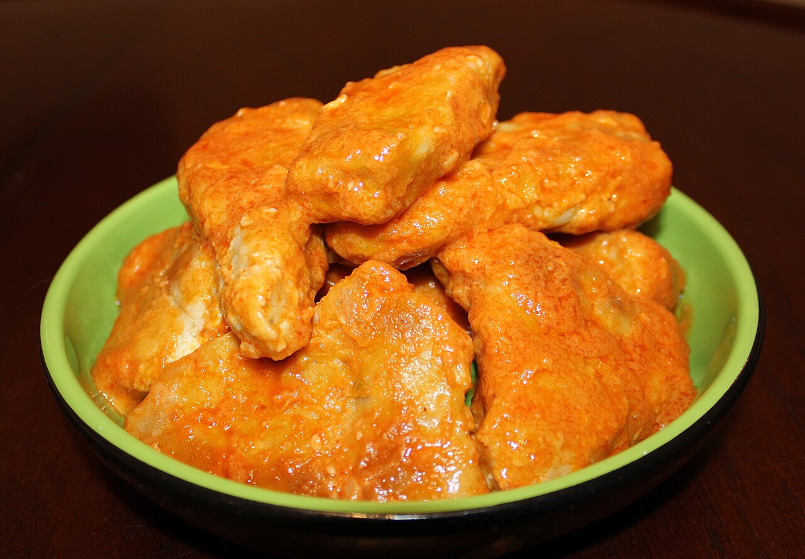

on the sideboneless wings
also: boneless · wyngz · boneless chicken wings
Ordered by count like a wing and priced like a wing. A kitchen that sells both will ask bone-in or boneless before it asks the sauce.

Small pieces of skinless, boneless chicken breast coated in flour and spices, then fried or baked, like a chicken nugget, and tossed in or served with the same sauces as a Buffalo wing. Restaurants began offering them after the price of raw wings rose and as some diners wanted a neater way to eat; they are sometimes marketed under the name wyngz.
The story Cited · web-ap-boneless-wings-ohio
The argument over the word reached a state supreme court. On 25 July 2024 the Supreme Court of Ohio decided Berkheimer v. REKM, L.L.C., slip op. No. 2024-Ohio-2787, 4 to 3. Michael Berkheimer had ordered boneless wings with parmesan garlic sauce at Wings on Brookwood in Hamilton, Ohio, in 2016. A bone lodged in his esophagus and tore it, and the tear caused an infection; CBS News reports the bone at 5 centimetres, while a law-firm note on the case describes it as roughly 1 3/8 inches. He sued, saying the restaurant failed to warn him that boneless wings could contain bones. The trial court gave the restaurant summary judgment and the appeals court affirmed.
Justice Joseph T. Deters wrote for the majority. The Associated Press reports the opinion holding that a diner reading boneless wings on a menu would no more believe the restaurant was warranting the absence of bones than a person eating chicken fingers would think he had been served fingers. CBS News quotes the opinion directly: "The food item's label on the menu described a cooking style; it was not a guarantee."
Justice Michael P. Donnelly dissented, joined by Justices Melody J. Stewart and Jennifer Brunner. He called the majority's reasoning "utter jabberwocky". Of the word itself he wrote: "When they read the word 'boneless,' they think that it means 'without bones,' as do all sensible people." And of the jury the case never reached: "Does anyone really believe that the parents in this country who feed their young children boneless wings or chicken tenders or chicken nuggets or chicken fingers expect bones to be in the chicken? Of course they don't".
Inference — the two opinions are arguing about different things. One asks what a menu word does — names a preparation — and the other asks what a customer hears. This project records both and adjudicates neither; the court's own count was four to three.
How it is done Cited · wp-buffalo-wing
Cut breast into roughly one-inch pieces. Dredge in seasoned flour, or batter, then fry or bake. Sauce goes on the same way it goes on a wing: into a bowl, sauce poured over, shaken. Because there is no skin and no bone, the coating is doing all the work the skin does on a bone-in wing, and it goes soft faster once the sauce hits it.
Today Inference
On the menu at nearly every chain and most bars, usually priced per piece against the bone-in count on the same board. Inference — the price gap moves with the wholesale wing market rather than with the cost of breast meat, which is why the boneless order is sometimes the cheaper one and sometimes not.
The particulars
| course | main |
|---|---|
| cut | boneless |
| region | The United States |
| confidence | high · needs verification · updated 2026-09-16 |
Not to be confused with
- the wing cut — Bones. A bone-in wing is two pieces cut from one limb; a boneless wing is breast meat cut into chunks.
Who it runs with
Who talks about it
Where we got it
- Buffalo wing · link
- It's OK for 'boneless' chicken wings to have bones, Ohio Supreme Court rules · link
- Diners who order boneless chicken wings can't expect them to really be boneless, court rules · link
- Berkheimer v. REKM Decision Says that Customers Should Reasonably Expect Bones in Boneless Wings · link
- Chicken nugget · link
- Chicken tenders · link
Where it came from: Cited a source we name · Harvested pulled from an open dataset · Tradition what the tradition says, hedged · Inference this project's reasoning · Field somebody stood there. This record as JSON.